来源：https://u0yrmcie7v.feishu.cn/docx/FyODdreh7oK8ZwxfsiWcOec4n0c
大家好，我是西昂。目前在做一些虚拟产品变现项目。
6月22日，我们小群的黄校长写了个复盘贴。分享了前段时间操作的midjourney共享账号的项目，并且还被亦仁老大给了精华。小组内立马组织了新的行动，定下了一个月一篇帖子的flag。
今天这篇文章，主要来介绍一下
我们是如何跑通midjourney共享账号0-1，以及3人如何获得30w+利润的。
话不多说，直接开整~
先说说我们线上赚钱小组吧，我们小组一共有三个人。我们是通过生财的11月航海认识的，当时我是领队，他们是志愿者。
我那时候在闲鱼卖GPT的账号，赚了2000块左右。项目结束后还专门写了一篇帖子。
帖子里讲了有朋友付费学习，其中一个就是晓雨。刚开始我们是操作在闲鱼卖gpt的，那个时候我的账号还一直在出单，但是晓雨由于前期操作不是很熟练，错过了最早的那一波流量。
在做gpt账号的时候，我发现了midjourney共享账号的这个品。然后，告诉晓雨立刻上架。可以看看时间是22年12月7日。
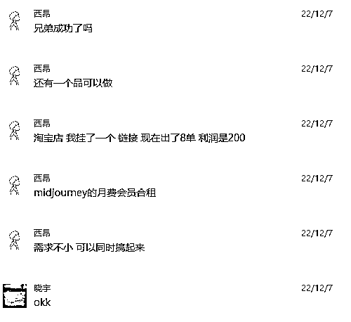
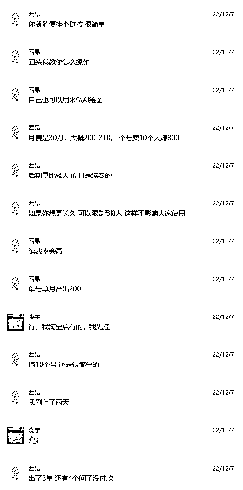
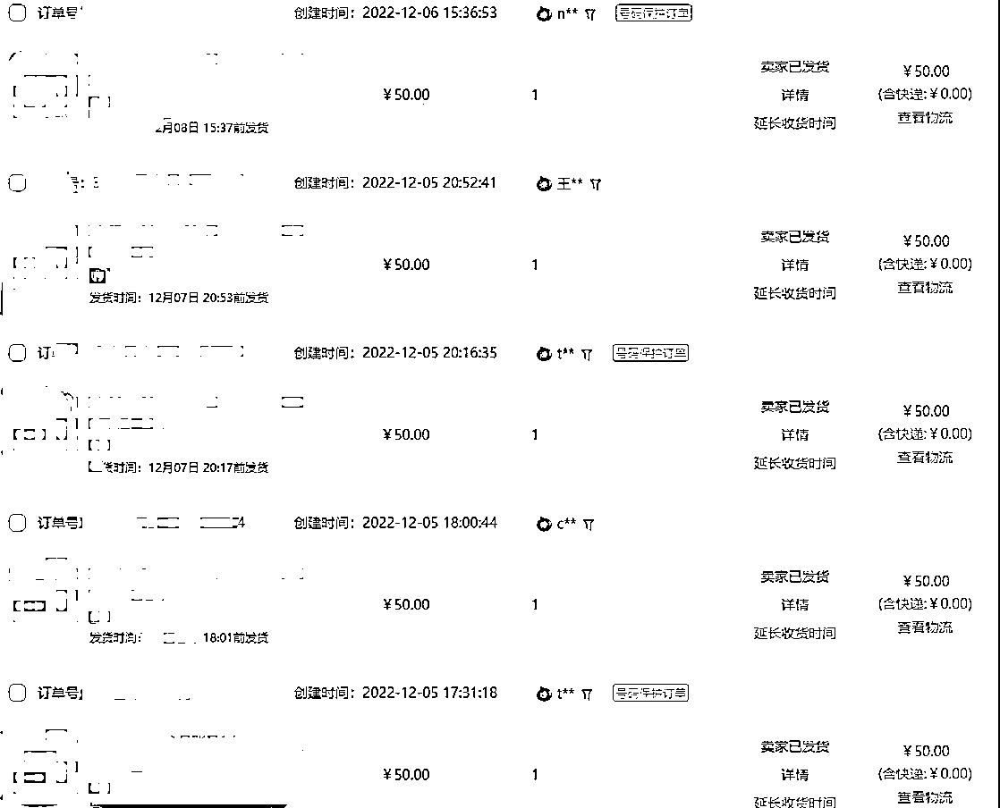
可以看出当时midjourney的需求还不是很大的。（早就是优势，真的没错！）
后来闲鱼突然开始封号，晓雨总共出了几单就封号了。于是chatgpt这个项目宣告结束。然后我们就全力投入到midjourney的项目中去了。
然后这时候，我在生财里回复了一个关于Ai绘画的帖子，和老黄又重新获得了联系。
老黄问我在做什么，然后我告诉他我们在做midjourney的账号。他说也要一起干，于是就直接付费开搞了。
那时候我们的要求不高，每天收入在100以上就满足。
于是，我们的小组名：赚个小钱。
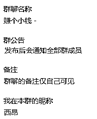
刚开始操作的时候，由于淘宝上只有一个店铺在卖共享账号，我们三个人进来后等于瓜分了大部分的蛋糕。而且对方的连接还时不时的会消失，我当时推测是他刷单被查造成的。（我们绝不恶意投诉举报之类的，不作恶是我们的底线。）
当另外那个店铺不在线的时候，可以说是我们垄断了这个品。价格就是我们说了算了。我们统一把价格提高了1块。不要小看这1块钱，这都是利润呐。
这时候我发现有比我们低1元的商品上架了，于是我在群里通知他们两个，同一将价格设置为50元或者49.9元，不要打价格战。谁都不允许降价销售。
你可以利用其他的福利吸引用户，那是你的能力。但是打价格战，就意味着项目要完了。
于是，再有更低价格的让进场后，我们三个人的定价一直没有变化。当排在前面的几个商品都是一样的价格，而后面有一个价格很低的商品，买家大概率会怀疑低价的有问题。
当然了，低价一定是有问题的。它涉及一些灰色的产业，这个咱们不展开讲了。
期间我们还遇到了同行卖低价token账号的，晓雨首先发现的，然后发到了群里。我看了一遍说明，然后搞定了全部流程。
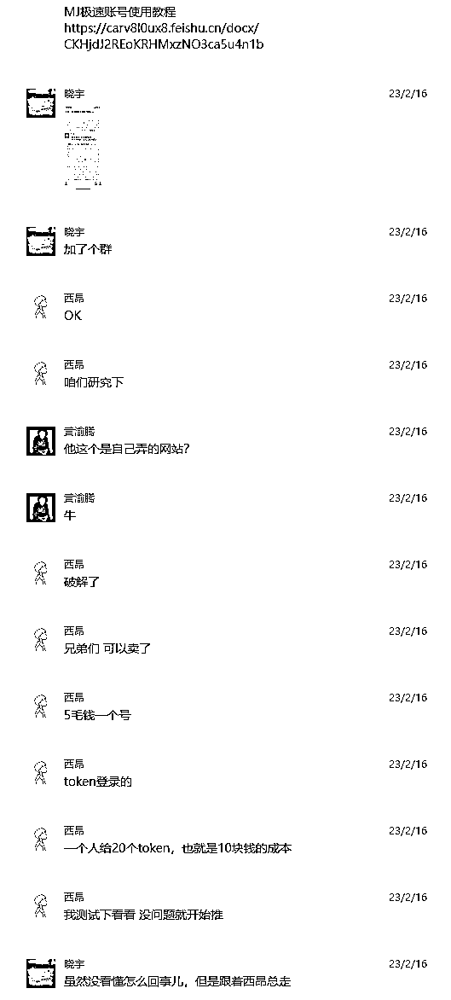
我们也对老用户进行了推荐，但是成交一般。token账号容易出现手机验证，太麻烦。卖了1单后就放弃了。
后来还有生财公布的自己邀请，开无痕模式无限刷图的骚操作。测试了一下也没有卖出去。
做项目的时候，一定会遇到恶意的人。于是，我们的小组群就有了作用，及时通知大家XXX买家不要卖。极大的避免了损失，所以，报团是有好处的。
刚开始的时候，我们是进行邮箱验证的。操作方法：提供账号——客户登录——去邮箱点验证邮件——客户登录成功。
后来discord突然加强了验证，对于多地区登录的账号强制修改密码。要知道，修改密码是会踢掉所有设备的。
于是，又开始研究其他的方法。然后发现进行2FA验证可以完美解决这个问题。
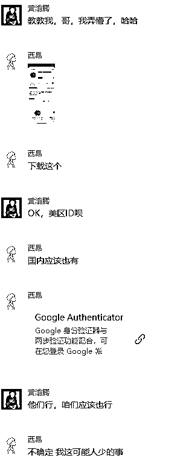
期间我们还解决了，快速注册问题、手机号验证问题、强制T人问题、恶意消费问题等等一系列的问题。终于，小群里面没有其他的问题出现了。
midjourney项目算是顺利跑通了。
过年的时候我和晓雨事情比较多，回复就不怎么用心了。老黄从这个时间段就反超上来了。达到了月销1000+，我们一个是600+一个是300+。
于是在群里声讨老黄，让他交代了自己的文档，也就是他帖子里附带的那个。看了他的文档后，我们说难怪人家成了第一。
于是也开始学习制作自己的文档，同时制作教程、搜集关键词。
这时候，我利用自己以前学习的采集技术，爬取了几万条midjourney官方咒语和图片，作为福利赠送给用户。提高了转化率。
我记得清清楚楚，3月19号这天。midjourney发布了v5版本，全网爆火。下面这个新闻直接把热度拉满了。
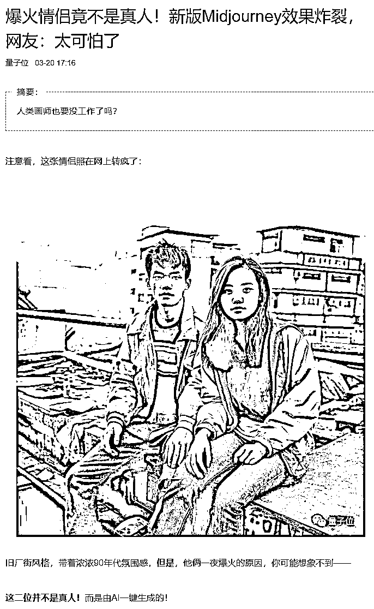
可以看看当时的百度指数
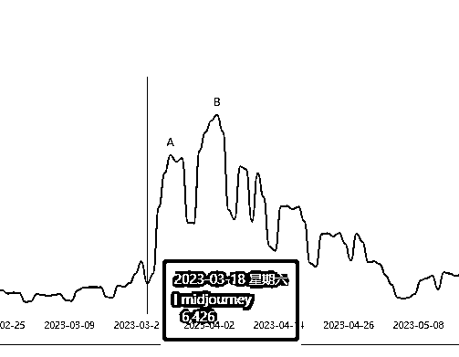
可以给大家看看但是的交易频率，下面图片的时间已经很明显了。
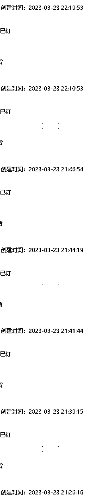
23号那天基本我们三个人都忙疯了。
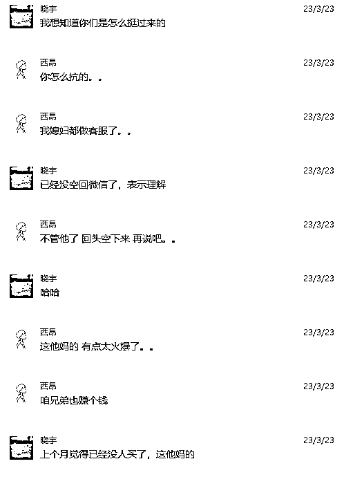
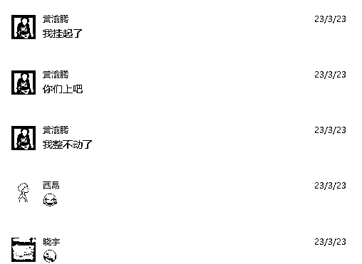
由于大批量的用户涌入midjourney官方服务器频繁的故障，各种出不来图、卡死、维护等等。
于是开始研究如何与官方联系，于是找到官方频道中的member-support频道，在里面留言解决账号问题。因为解决问题及时、公告及时等原因。我的店铺快速上升到了淘宝第一名。
这个是当时总结的问题文档，很多midjourney的问题都总结了。当时真是节省了大部分的时间，所以才能在最忙的时候扛下来。
当时的流量是这样的，可以看出这个暴涨的曲线。
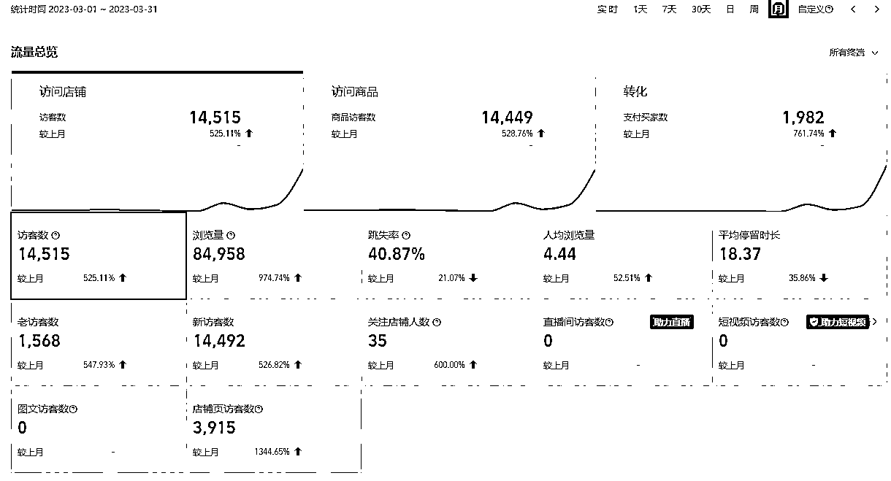
当时的交易额，大概是3月份是10W多点，4月份是11W多点。按照60%的利润来计算，大概是12W左右的收益。
后续了解到，在这个时间段入局的高手，单月收益做到了40W。我们只是属于较低的层次。
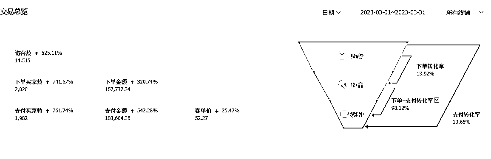
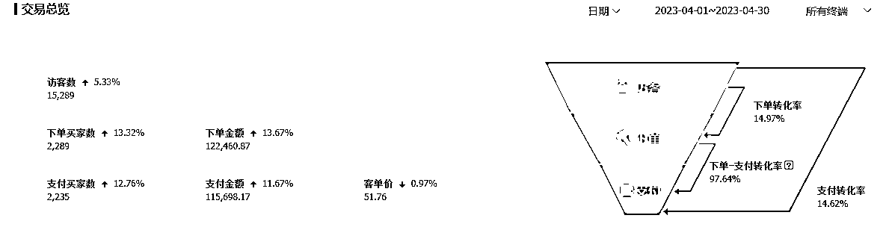
1、同行压价：现在搜索一下可以看到很多低价格的产品，利润压的很低。除非做到头部，否则没有太多的利润。你说为什么那么低？可以百分百肯定的说：黑卡支付的。当时有人提出给我们供货，30美元的standard plan只需要50块，而我们正规汇率是210左右，价格战咱们必败无疑。
2、风控加强：国外的所有ai工具基本都是用的stripe的订阅功能。stripe的风控格外的严格，大家开chatgpt plus会员已经都接触到了。mdijourney其实也差不多，国内的卡大概率拒付。所以，没有了供应，也就没办法做了。
3、流量下降：midjourney的整体流量是下降的，因为ai绘画工具越来越多，sd的功能越来越强大。所以，midjourney不可避免的会失去很多流量，减少了用户也就减少了收益。
2023-7-18更新：淘宝现在已经禁止销售midjourney账号，店铺会扣12分。目前还有一些天猫店和不怕封店的人在做，大部分人已经停掉了。
1、短期项目拼的就是执行力，当你看到机会就要立刻跟上。其实当时还有几个朋友一起操作，但是都比较忙，上架商品以后就没在管过。所以，也就错过了这一波。
2、向对手学习，向他人学习。发现别人比你做的好的时候，不要拉不下脸张不开嘴。该问就要问！
3、多看风向标，每天都执行。哪怕只做了一步，也已经超过了90%的人了。因为更多的人只是看，并不会行动的。
1、由于没有提前设计好自动发货流程，流量最高的时候，造成了大量的订单流失。比如，可以利用一些自动发货软件来提高效率，或者是配置好客服系统避免高峰超时。
2、引流到私域的用户没有进行更多的变现，等于浪费了资源。比如 ，可以像亦仁老大说的对接其他付费项目来获取佣金等。
3、没有及时放大操作。当时手里还有其他店铺，但是感觉自己太忙了，就把那个店铺关掉了，也损失了一些客户。如果做好第一步的自动化操作，其实可以多个店铺同时上架。